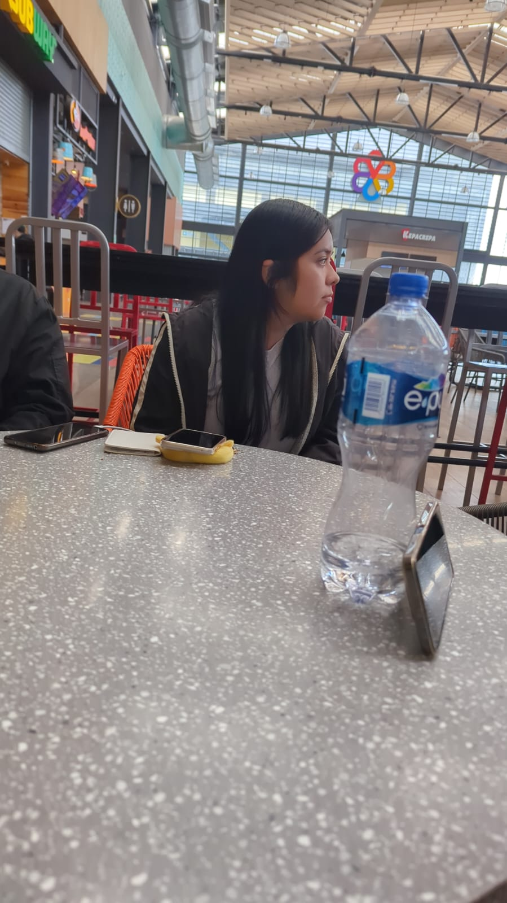
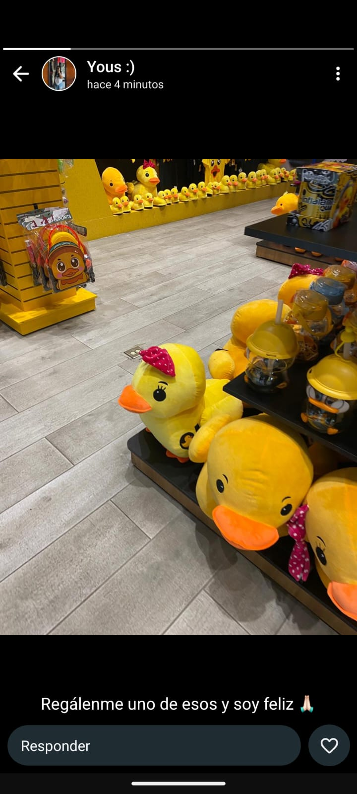
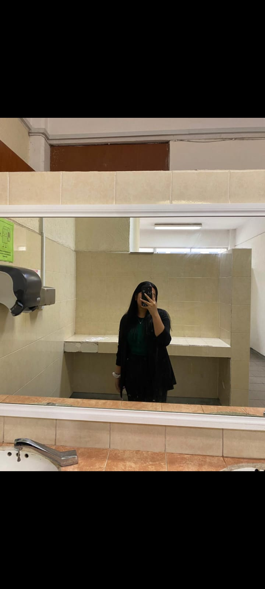

Estabas tan linda y distraída... como siempre
Intente controlarme y creo que lo conseguí 🫠
Amé ese día, la manera en que tartamudeabas al exponer... fue perfecto

Fue tan complicado tener un tema por hablar, pero se logró...
Jamás creí estar tan interesado en temas monotónos, pero una vez
más; materializaste lo impensable
Despúes de mirarla, decidí eliminar de contactos a tus amigos, ese día
me recordaste a Vladimir Putín, y me pareciste más perfecta
Sin embargo, me afecto seriamente ver esa foto, donde claramente no
saldría yo, jamás...
Sin embargo, quedó entre añoranza y recuerdos...
Seré honesto una vez más
Miré que a pesar que pasaron las semanas, sigues mirando los qr que te
dí
Y me cuestioné...
¿Esperará algo más?
Así que decidí hacerte un sitio web, de hecho lo hice repentinamente
Respuestas; no terminó de entender porque sigues viendo lo que te hice, honestamente creí que lo deshecharías, estaba muy apagado en aquellos días...its though...
Al menos intento volver a encenderme y tal, ayudar a los demás y eso...
Aunque me sigo cuestionando ¿Qué tendré de malo?
Odio estar así, sin embargo soy feliz... supongo
Indudablemente, sin embargo ya puedo canalizar mejor mis emociones, y no mirarte
Quería que fuera privado, ya que no me gusta confíar mucho en la gente, sin embargo canonicamente se entero Emiliano, Armando, Leo y Gus, lo detesto porque en ocasiones te mencionan, y es duro... durisimo, y exploto contra ellos
Tambíen lo saben tus amigos, excepto Alan y Cesar
Y la única persona que quería que lo supiera; David... un tio chill de cojones, jaja, la única persona en quien confío, y le digo las tonterías que pienso, que hago, y todo lo relacionado a ti
Como el ponerme súper ansioso cada domingo a la una am, pensando que hablaremos el lunes, y asi en loop cada semana JAJA
Ó mencionando todo lo que me gusta de ti jajaja, creo que ya me odia🤪
Y bueno, es increíble la cantidad de cosas que hago en mi cabeza, odio esto
En fin, creo que no me arrepiento de nada, incluso con los catastróficos resultados
Bueno en ocasiones lo hago, si jamás hubiese abierto la boca, hipoteticamente seguiriamos hablando...
Not at all... Bueno jaja, miré en tiktok que aparentemente las mujeres les gusta que insistan, sin embargo no soy de ese tipo de ideales, pero deje de pensar solo en mí, y pensé, quizá se lo esta replanteando, quizá a visto que soy un tio chill de cojones, o quizá solo ha estado aburrida y aprecia lo poco que le doy...
Mi mayor preocupación es caer en terminar siendo un acosador 😣
Y mi otro miedo es que abusen de mi nobleza, puedo llegar a ser muy vulnerable 😕
Pero nada, si lo haz considerado o algo así no dudes en hablarme
Podría ser súper intenso de vez en cuando, pero lo que menos quiero es incomodar, pero al mismo tiempo necesito expresar este tipo de cosas jajajajaa
Perdón, hacía más de un lustro que no me sucedían este tipo de cosas
Creo que no... Bueno sí, los extraño mucho... y es duro porque creo que los idealice un montón, y no sé hasta que punto fue real, hablando al menos de amistad con el resto de sujetos
Sin embargo, nadie ha tenido el interés de hablarme más (excluyendote), y esta bien, no es su obligación
En fín... Te deseo mucha suerte, estoy en una dualidad donde no quiero que acabe el semestre, porque no te veré más, y donde quiero que acabe el semestre porque no te veré más
Por cierto, he intentado un montón en llamar tu atención, pero nada jala 😣
Y nada, tengo un montón de malditos pensamientos tiernos que te juro que odioooooooooo
Espero que te haya gustado... honestamente estuve a nada de eliminar el último qr, se me hacía muy progresista y en ocasiones poco adecuado, sin embargo niña polaca creo que reflejo perfectamente lo que necesitaba, creo que te gustó esa canción según las métricas, no estoy seguro...Y la de get outta my mind jaja, me pase un buen de horas haciendo ese video, ni siquiera le dedico ese tiempo a mis tareas 😂 ya no estas tanto en mi cabeza, solo en ratitos
Sigue vigente... noté que lo miraste desde diferentes teléfonos, solo espero que no lo compartas con alguien que pueda hacerme daño a través de ti... Genuinamente quisiera escribir más y más cosas en aquella carta, y que jamás terminase... Pero creo que eso solo se lográ cuando tú también quieres que no termine
He estado leyendo he investigando sobre mítologia griega, me gusta relacionarte con los dioses de aquellas épocas, da la casualidad que nuestra historia refleja a Apolo y Dafne...
Dió la casualidad que eron a.k.a Cúpido, tuvo 2 flechas, con una hechizo a Apolo para que se enamorasé profundamente de Dafne, mientras que a Dafne solo hizo que sintiera un gran nivel de desagrado hacia Apolo, y así fue como murieron; separados para siempre
Eeeeen fin... ¿Quizá lo haz considerado? Esa pregunta es para ti, aunque quisiera una respuesta no te puedo obligar a nada... No sé, no entiendo porque yo no:/... Bueno si lo entiendo, pero no quisiera que fuese mi realidad😔
Pero si de pronto, te nacé... puedes cambiar tu vida con un simple click
Por cierto, he dejado el R&B de momento, me recuerda un montón a ti, sin embargo, pille algo así como ¿Rock? no estoy seguro, pero toooooodas las canciones me recuerdan a ti, y es contradictorio, no lo crees?
Quisiera dedicarte como un millon y medio de canciones, pero en esta ocasión solo será una... para la chica más bella del coachella bueno esta bien, será otra más solo porque miraste todos los videos que te envíe, y porque estoy más colao que el colacao... creo que te comenzaré a reconocer como Irene
Fue bonito hablar contigo, aunque solo haya sido de esta manera, por un mensaje que ni siquiera leerás en el momento en que escribí, y aunque no vaya a obtener respuesta alguna, fue muy bonito... PD: esta página solo estará disponible un año, solo pague por el dominio por un año jajaja. Ah, sientete libre de visitarla cuando quieras, en esta ocasión no tengo métricas, no sabre si la visitaste nunca, o cuantas veces, no sabré nada (y lo odio porque me hacia muy feliz ver como subian las views en la cartita, por cierto, no entendi porque lo visitaste 26 veces, en comparación a los videos fueron un montón de veces, ese tipo de cosas me hace bien feliz jajajajaja) PDDDDDDD: Te gustaría ir conmigo a un torneo de ajedrez el próximo 29 de noviembre? O si no te gusta, pues a cualquier otra parte... Yyyyyyy llevarte hasta tu casita de tu pueblito (sin que yo entré) y así. Jajaja, no aprendo, en cualquier caso, te quierooooo ❤️